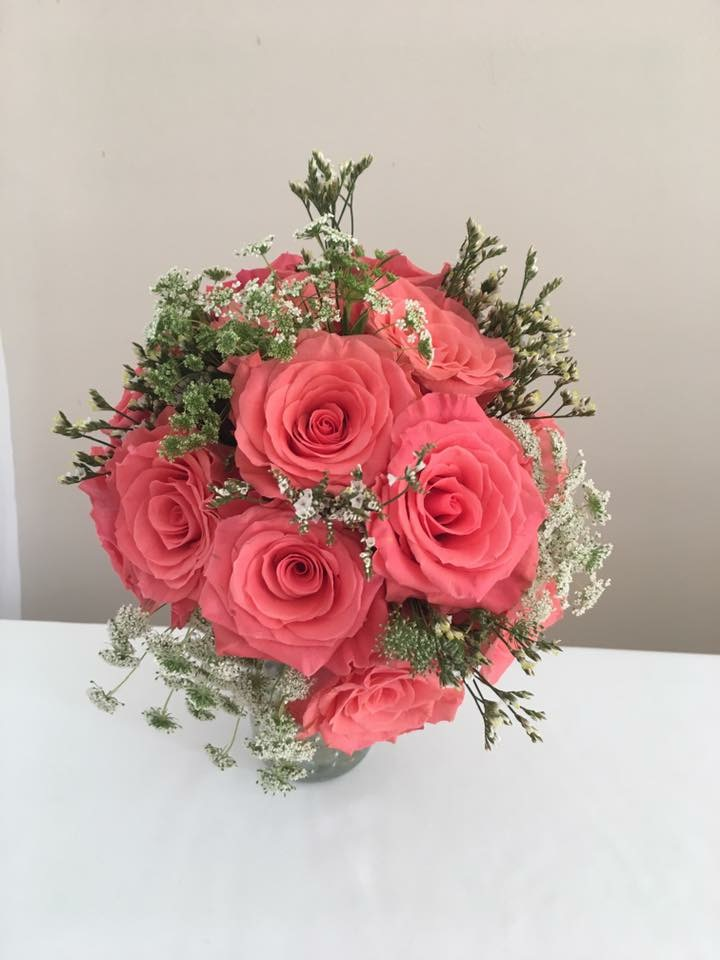

Wedding flowers designed around you.
Your wedding flowers should look like you — not a catalog. As a custom, appointment-only studio, we design every wedding from scratch, around your colors, your venue, your style, and your budget. No cookie-cutter packages, no pressure — just beautiful flowers.
From bouquets to ceremony arches.
- Bridal bouquets & bridesmaid bouquets
- Boutonnieres & corsages
- Ceremony florals — arches, aisle arrangements, altar pieces
- Reception centerpieces & table designs
- Cake flowers, garlands, and finishing touches
- Flower-girl petals and accents

Simple, custom, no pressure.
- Free consultation. We meet in person, by phone, or over Zoom to hear your vision and talk budget. No obligation, no upsell — just a real conversation about what you want your day to feel like.
- Custom proposal. We put together a plan and pricing built around what matters most to you. If centerpieces are your priority, we focus there. If you want a showstopping ceremony arch, we make that the moment.
- Design & delivery. On your day, we deliver and set up everything — bouquets at the suite, ceremony florals in place, centerpieces on tables — so it's all perfect before you arrive.
Why budget-based pricing?
Because every couple is different. We'd rather build a design that fits your budget beautifully than hand you a fixed package that doesn't fit at all. Tell us what you're working with, and we'll make the most of every dollar.
Not sure where to start? We have a breakdown of what different wedding flower budgets actually buy you in Central PA — useful before your first consultation.
Real weddings, real flowers, real reviews.
Our flowers were absolutely gorgeous! Elyse took the pictures I gave her of what I wanted and she far exceeded my expectations. She was also very flexible with several changes I wanted to make throughout the planning process. We got so many compliments on our centerpieces at the reception. Thank you Plenty of Petals for everything!
KathleenElyse and Devon did the most amazing job for our wedding flowers! They are easy to work with, affordable, and flexible for day of! I had such a difficult time deciding on what flowers I wanted but we worked together to get the most beautiful bouquets. I was literally speechless. I couldn't have asked for more!
CaseyThey were wonderful to work with. They provided beautiful flowers in exactly what I wanted. The flowers were perfect. They even provided delivery and pick-up the day of our wedding.
PaulaLet's design your wedding flowers.
Dates book up, especially in peak season — reach out early to start the conversation. Consultations are always free.
Book a Consultation